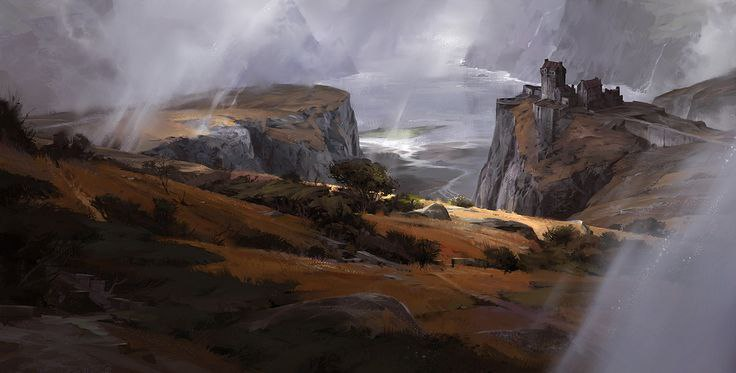
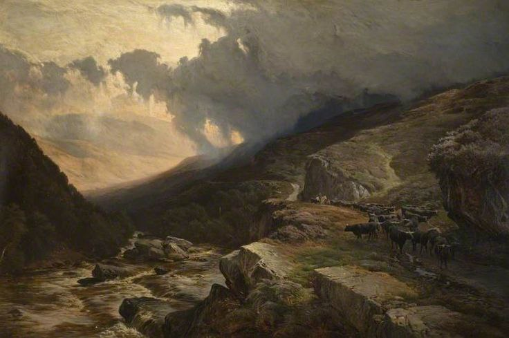
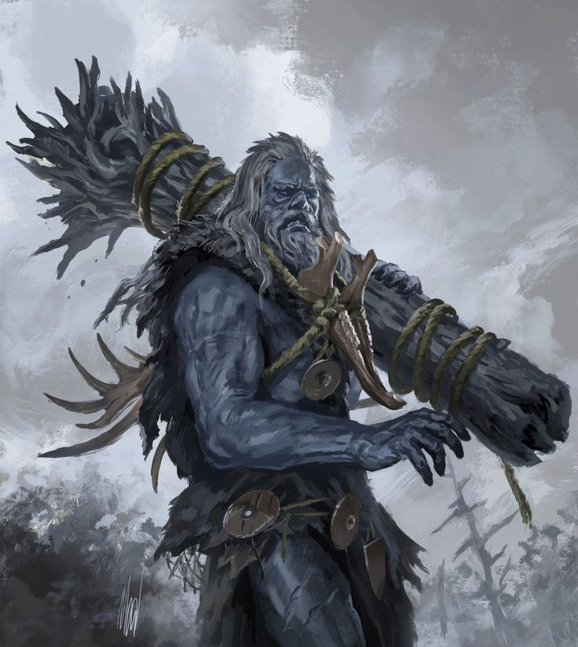
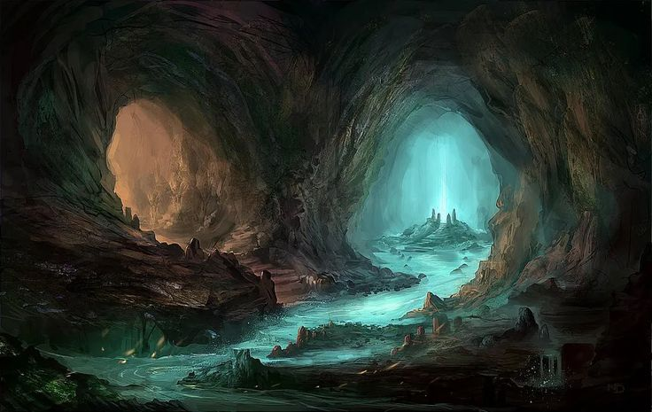

Львиный клык левый

Добро пожаловать на Львиный клык левый!
Львиный Клык Левый — это суровое и опасное место, которое всё дышит первозданной дикостью. Порывы воздуха здесь пронизывают до костей, а скалы, словно обнажённые клыки земли, цепляются за небо своими остриями. Этот край жёстче и хладнее, чем его правый собрат, и почти не знает пощады. Но именно в этой неприветливости кроется его древняя сила и неповторимая красота.
Природа и ландшафт

Здесь климат суров: сильные ветра, порой штормовые, режут пространство, поднимая пыль и снег. Облака цепляются за пики и висят низко, окрашивая всё в серо-синий свет. Почва скудна, растительность почти полностью отсутствует, если не считать редких лишайников и покрытых шипами кустов, цепляющихся за трещины в камне. Ландшафт неприветлив: отвесные стены, узкие гребни, опасные тропы и глубокие расщелины. Но именно здесь, среди северной пустоты, можно найти одни из самых ценных минералов и руд в регионе.
Обитатели

Левый Клык населен дикими и свирепыми существами, во многом схожими с обитателями Правого. Грифоны здесь крупнее, более агрессивные и территориальные. Помимо всё тех же урсов и фурчев, на Левом клыке можно встретить сов, горных баранов и шор. Среди пиков живут горные титаны — гиганты, даже среди своих сородичей. Более дикие, чем те, что обитают в Титановом лесу, они почти не вступают в контакт с другими расами и живут в уединённых общинах, скрытых в расщелинах и пещерах. Их можно увидеть издалека: тени великанов, сливающиеся с облаками.
Тормийские пещеры Мары

Также в недрах Клыка прячутся Тормийские пещеры Мары, принадлежащие дворфам — система подземных коридоров, наполненных влагой, кристаллами и стародавними обвалами. Местами тоннели уходят глубоко вниз, к подземным озёрам и затопленным залам.
По одну сторону...
Левого Клыка течёт река Мара, несущая свои воды навстречу Центе и сливаясь с ней у города Иримор. А вот именно между двумя Клыками бурлит Цента, образуя естественную границу между этими громадинами. Львиный Клык Левый — место мрачное, дикое и почти не изученное. Он отталкивает своей беспощадностью, но одновременно манит тех, кто ищет испытаний, сокровищ и ответов, скрытых в камне.